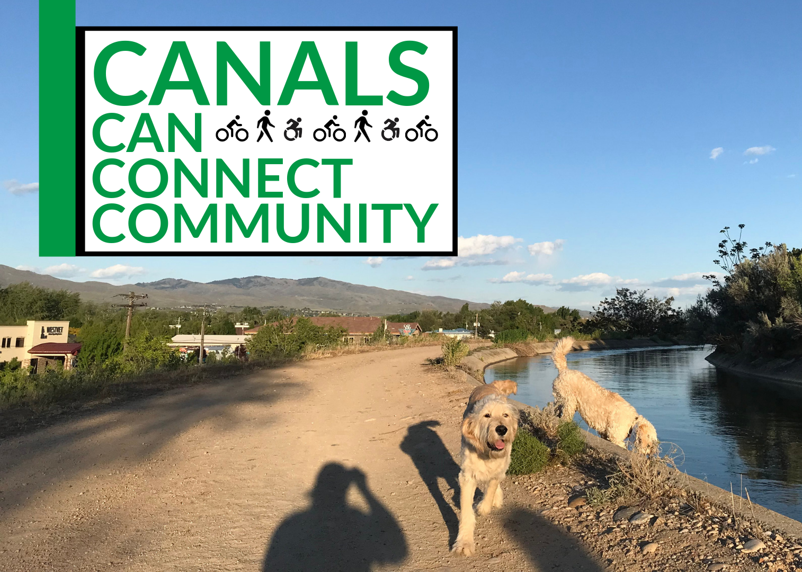
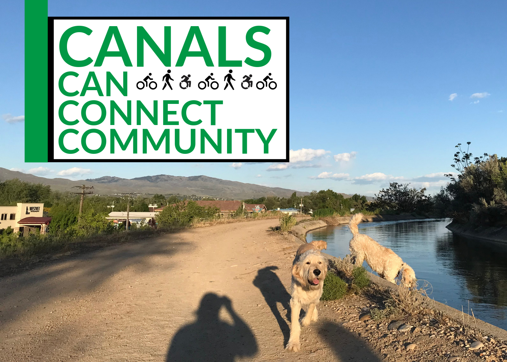
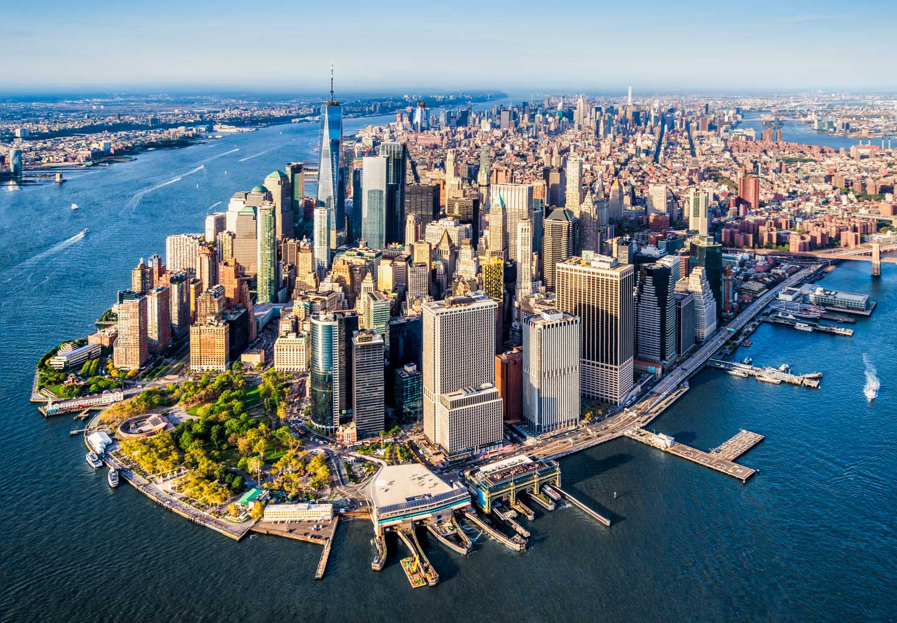
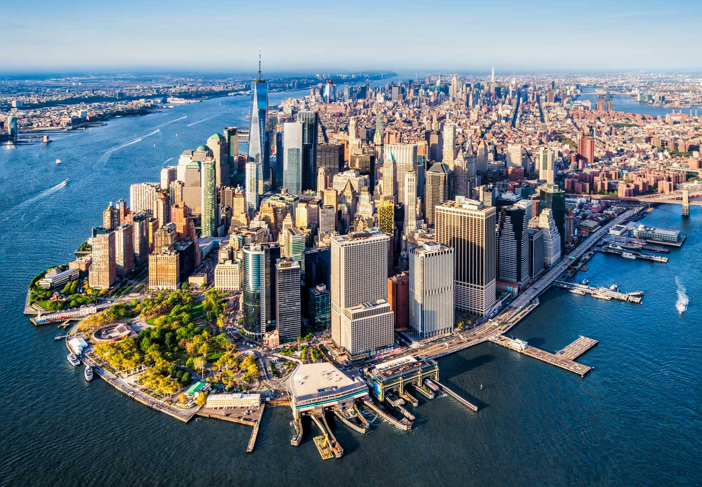

Image source: SierraClub.org
Image source: VisitPhoenix.com
Image source: SierraClub.org
About
Have you ever wanted to commute to work or school by bike but are concerned about the safety of biking on roads? Do you want to take a relaxing walk but dislike the constant presence of cars? The “Canals Can Connect Community” campaign can help eliminate those fears and concerns through the creation of public pathways from existing canal service roads. According to Idaho Chapter Sierra Club, the city of Boise has access to over 1,500 miles of canals. That is a lot of untapped commuting potential!
Safety
If you have lived in Idaho long enough, you may remember the campaign of TV commercials and radio ads about the dangers irrigation canals pose to children, adults, and pets. Having pathways next to canals seems to directly oppose this message. To limit these dangers, the easiest solution is to install fences along canal edges. With appropriate pathway material and regular maintenance, a canal commuting system can become the safest way for everyone to get where they need to go.
Success Cities
Still not convinced commuting by canals is possible? Here are some example cities who are making it work right now!

 

How to Support
Supporting the “Canals Can Connect Community” campaign is easy! Click this link to write to our county and municipal executives and planners and tell them why you want a canal commuting system. Not only will you be supporting a great cause, but you will also make your voice be heard.
Southwest Idaho Canal Map
Download image here.